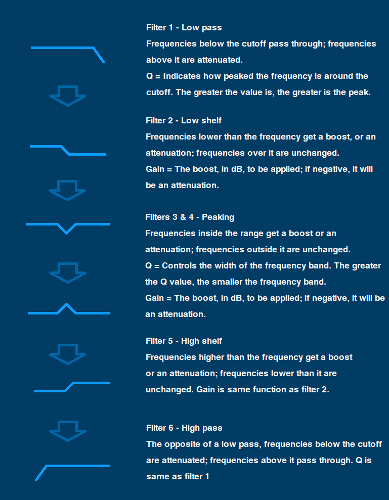
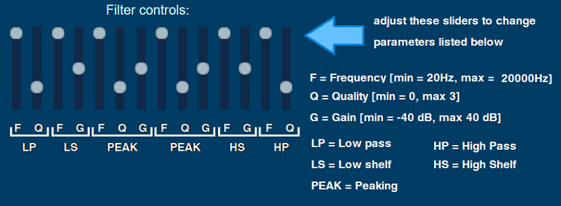

When you load one of the two source tracks, the audio is then fed through 6 filters in order to provide powerful manipulation. Please see below for an explanation of what each filter does.

As seen above the filters have various controls such as frequency, gain and Q. These are described in the key below:
